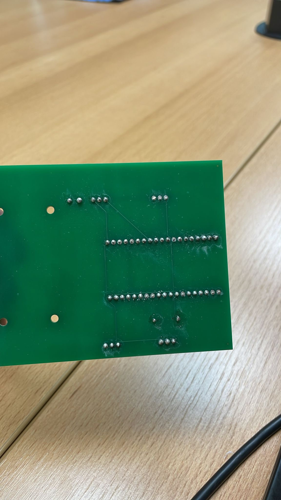
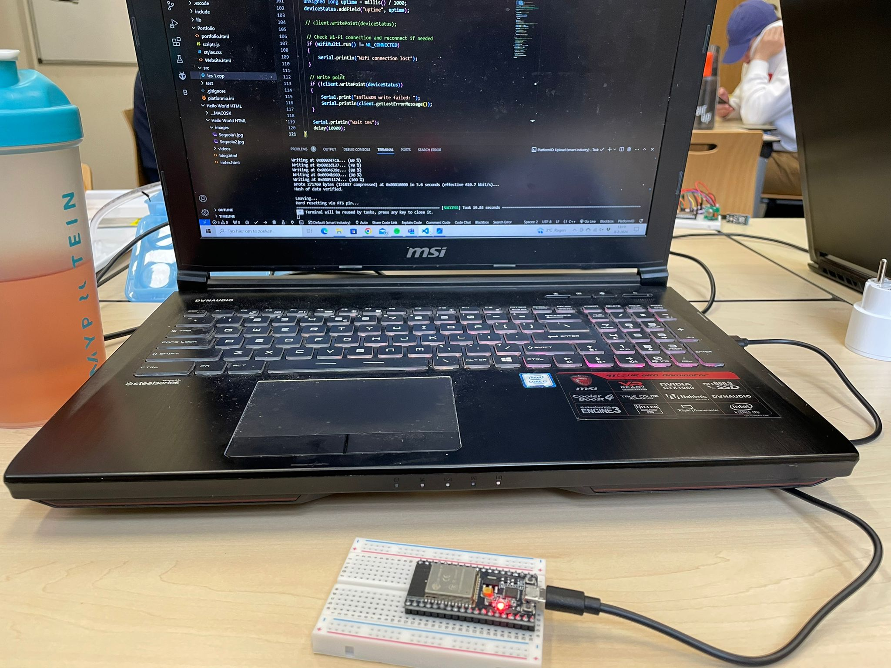
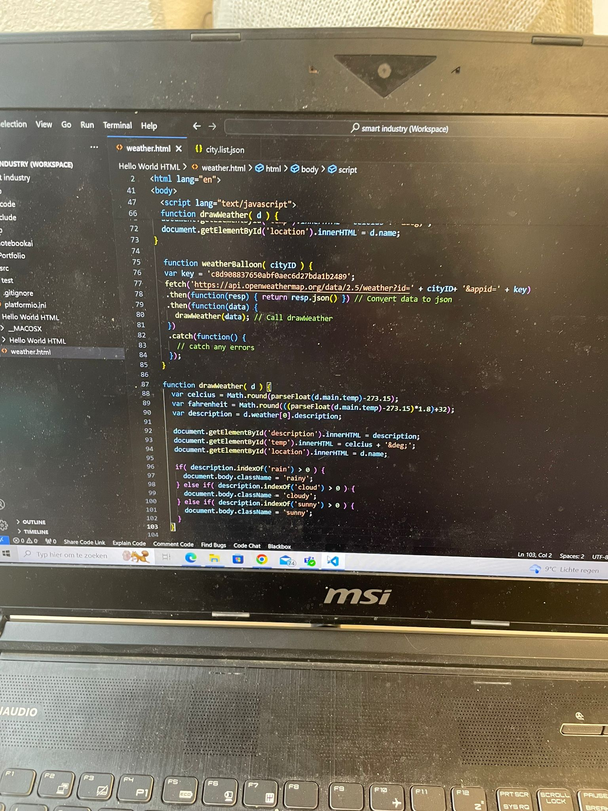
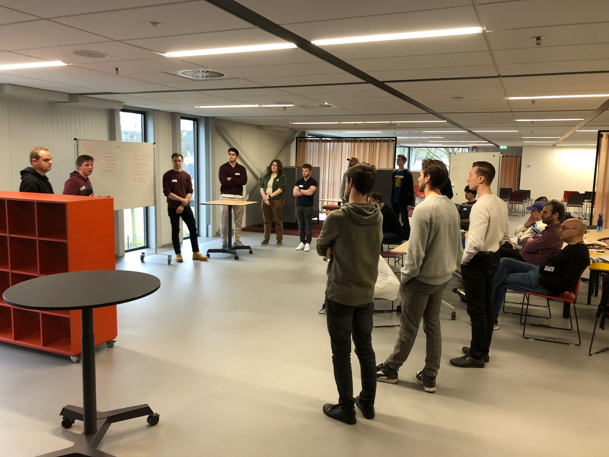
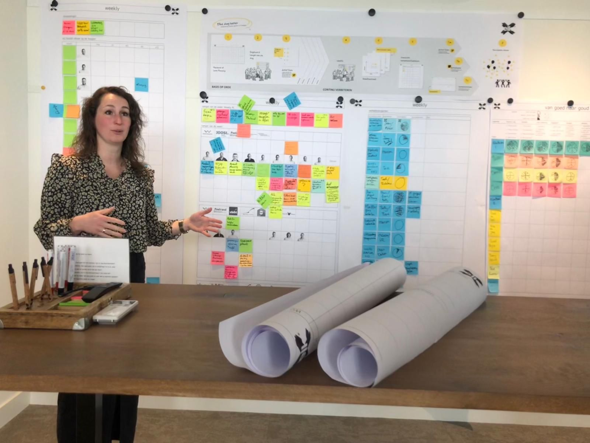

Smart Connection
Workshops AI
Tijdens de minor MSI heb ik een serie van drie workshops over kunstmatige intelligentie (AI) gevolgd. Deze workshops waren ontworpen om een uitgebreide introductie te geven in de wereld van AI en data, met een opbouw van de basisprincipes naar meer geavanceerde toepassingen.
De eerste workshop bood een overzicht van wat AI precies is en een diepgaande blik op de geschiedenis ervan. AI werd gedefinieerd als de mogelijkheid van een machine om menselijke intelligentie na te bootsen, zoals leren, redeneren en zelfcorrectie. De belangrijkste punten die tijdens deze workshop werden besproken, waren:
• Definitie en Doel van AI: AI is een vakgebied binnen de computerwetenschappen dat zich richt op het creëren van systemen die taken kunnen uitvoeren die normaal gesproken menselijke intelligentie vereisen.
• Geschiedenis van AI: Van de vroege dromen en theorieën van wetenschappers zoals Alan Turing, tot de ontwikkeling van de eerste AI-programma's in de jaren 1950 en de daaropvolgende pieken en dalen in het veld, bekend als de "AI-winters".
De tweede workshop bouwde voort op de kennis uit de eerste sessie en richtte zich op de huidige toepassingen en de stand van zaken binnen AI. Enkele belangrijke thema’s waren:
• Huidige Toepassingen van AI: AI wordt tegenwoordig gebruikt in verschillende industrieën, waaronder gezondheidszorg (diagnose en behandeling), financiën (fraudedetectie), marketing (klantsegmentatie), en de auto-industrie (zelfrijdende auto's).
• Machine Learning en Deep Learning: De workshop ging dieper in op deze specifieke takken van AI, waarbij machine learning wordt gebruikt om patronen te herkennen en voorspellingen te doen, en deep learning complexe neurale netwerken gebruikt voor geavanceerdere analyses.
• Vooruitgang en Innovaties: Nieuwe ontwikkelingen zoals AI in natuurlijke taalverwerking, beeldherkenning, en het gebruik van AI in creatieve processen zoals muziek en kunst werden besproken.
De derde en laatste workshop richtte zich op de toekomstige mogelijkheden en de ethische vraagstukken rondom AI. Dit was een zeer interactieve sessie waarbij we ook hebben gedebatteerd over verschillende scenario's en morele dilemma's. Belangrijke punten waren:
• Toekomstige Trends: Verwachte trends zoals de verdere integratie van AI in dagelijkse toepassingen, de rol van AI in smart cities, en de ontwikkeling van kunstmatige algemene intelligentie (AGI).
• Ethische en Maatschappelijke Implicaties: Discussies over de ethische implicaties van AI, zoals privacy, veiligheid, bias in AI-systemen, en de impact op werkgelegenheid.
• Regulatie en Beleid: De noodzaak voor internationale samenwerking en regelgeving om AI op een verantwoorde manier te ontwikkelen en in te zetten, en hoe verschillende landen en organisaties hiermee omgaan.
Deze reeks workshops heeft een basis gelegd in mijn kennis van AI, van de basisprincipes en geschiedenis tot de huidige toepassingen en toekomstperspectieven. Het heeft me ook inzicht gegeven in de belangrijke ethische overwegingen die we niet mogen negeren naarmate AI zich verder ontwikkelt met de workshop van Ceasar. Deze kennis zal zeker van pas komen bij het begrijpen van en bijdragen aan de toekomst van kunstmatige intelligentie.
Smart Technology
Workshop 3D printen
Met de workshops 3D printen hebben we een hoop dingen geleerd. De eerste workshop waren vooral opgebouwd in het kennis opdoen van wat het 3D printen is. Hierop aansluiten was een stukje historie met daarbij de huidige toepassingen van het 3D printen in de wereld. Hierop hebben we een stukje literatuur gelezen en een korte presentatie moeten geven over de toepassingen van het 3D printen in bepaalde situaties. Zo kwam in onze presentatie naar voren dat het 3D printen bijvoorbeeld gebruikt kan worden om voorraad te elimineren. Door bepaalde regelgeving moeten bedrijven onderdelen op voorraad hebben indien er van een oud model iets kapot gaat. Voor een bedrijf is het in dit geval niet handig om een voorraad te hebben liggen. Doormiddel van 3D printen van deze onderdelen kan deze voorraad geëlimineerd worden. Daarnaast zou het ook gebruikt kunnen worden om bijvoorbeeld op locatie onderdelen te printen die kapot zijn gegaan. Al met al zijn dit dus zeer interessante toepassingen van het 3D printen in de huidige industrie.
In de verdere workshops werd er meer gestuurd op het tekenen van een bakje in solidworks voor de iot schakeling. Hierin kregen we een aantal lessen in het werken in solidworks zodat we zelf ons eigen bakje kon ontwerpen. Het resultaat is dan ook een eigen getekend bakje die omgezet is in cura zodat deze 3D geprint kon worden. Uiteindelijk hebben ik dit bakje ook 3D geprint in het fablab in arnhem.
Ik heb dus doormiddel van deze workshops leren 3D printen, maar nog belangrijker van de toepassingen van het 3D printen in de praktijk. Ik hoop ook dat ik deze innovaties van het 3D printen in mijn latere carrière toe kan passen in mijn werkgebied indien deze kans zich voordoet.
Workshop Solderen
Binnen de minor MSI heb ik ook een workshop solderen gevolgd. Het doel achter deze workshop was om de eigen ontworpen printplaat te solderen. Hierop moest ik een aantal houders solderen zodat de verschillende onderdelen van de schakeling aangesloten kunnen worden op de printplaat. Hieronder het resultaat van deze workshop.

Workshop IOT
Binnen MSI zijn er een aantal workshops gegeven door Matthijs over internet of things. Deze workshops hadden het doel om mij de basis te leren van het coderen in visualcode. Hier heb ik 3 workshops gevolgd om de basis te leren en uiteindelijk een schakeling te maken.
Workshop 1 was vooral gericht op het leren van coderen in visualcode. Hierin waren een aantal cursussen opgezet waarin de code mee geschreven kon worden voor de schakeling. Hierin hebben we gebruik gemaakt van een breadbord om zo de onderdelen van de schakeling te monteren en met de geschreven code te testen.

Workshop 2 was een uitbreiding op workshop 1 om de gehele code te schrijven. Hierin is de gehele code geschreven voor de iot schakeling die kan dienen om een plant uit zich zelf water te geven. Ook is er een stukje aan toegevoegd in de vorm van influx database. Het doel hiervan is om de data die vanuit de schakeling gemeten wordt met de verschillende sensoren om deze te uploaden. Na workshop 2 was de volledige code voor de iot schakeling geschreven.

Met de geschreven code in de eerste twee workshops was dit gedeelte afgerond. In workshop 3 zijn we aan de gang gegaan met het ontwerpen van de printplaat. Hierop moesten de verschillende aansluitingen gemaakt worden en deze verbonden worden met waar de esp32 op de printplaat moet komen. Aan het einde van de workshop kon het ontwerp ingeleverd worden zodat de printplaten besteld konden worden.
Met deze workshops heb ik uiteindelijk dus geleerd een werkende schakeling te ontwerpen, coderen en het maken ervan. Hiermee is een werkende schakeling gemaakt om een plant water te kunnen geven middels de data die geüpload wordt door de schakeling.

Smart Business
Workshop 1 AXA
Het thema van de eerste workshop was gericht op het werken met een businesscase. Hierin kregen wij eerst uitleg over wat een businesscase kan betekenen voor een bedrijf in de praktijk. De businesscase is een goede manier om een soort van een moment opname te doen binnen een bedrijf. Daarnaast kan er ook mee gekeken worden of een bepaald idee zou kunnen slagen door het invullen van de businesscase. Deze workshop werd ingeleid door Geert die hierbij over een casus van het bedrijf AXA vertelde. Aan ons was daarna de opdracht om middels het gebruik van de businesscase een nieuw idee op de markt te brengen. Deze workshop werd afgesloten met een aantal korte pitches van de verschillende teams over hoe er marktaandeel gewonnen kon worden. Ons idee was om met een kastje een aantal verschillende data te meten zodat er op basis van goed gedrag een premie opgesteld kan worden.

Workshop 2 Elk
De tweede workshop bedroeg een bedrijfsbezoek aan ELK. Hierin hebben wij een rondleiding gekregen binnen elk met een focus op het werken met scrum. Binnen ELK wordt er gewerkt in verschillende projectteams die als een soort van kleine bedrijfjes binnen ELK dienen. Zo zit binnen deze teams alles wat er nodig is om aan de projecten te kunnen werken. Het kantoor hangt daarnaast vol met scrumborden waarin verschillende taken, targets en bezigheden te zien zijn. Daarnaast is er ook inzicht geboden in hoe ELK gebruik maakt van lean op bijvoorbeeld de werkplaats en binnen de projecten.

Het tweede gedeelte van de dag bedroeg een korte opdracht in verschillende teams op te lossen. Dit waren problemen waarmee ELK te maken had en waarop zij graag frisse ideeën wouden ontvangen vanuit ons. Hierin heeft ons groepje een aantal ideeën opgedaan op het gebied van duurzaamheid. Zo kwam er bijvoorbeeld naar voren dat er gebruik gemaakt kan worden van elektrische bronnen die op een aanhanger meegenomen kunnen worden. Hiermee kan er gebruik gemaakt worden van zonenergie op de sites waar de projecten spelen. Hiermee werd de dag ook weer met een korte presentatie afgerond.
Workshop 3 TOM model
Workshop 3 ging over de toepassing het targeting operating model binnen AXA en binnen onze eigen organisatie. Deze workshop gegeven door Paul startte met een uitleg en een aantal voorbeelden over hoe het TOM model binnen AXA gebruikt kan worden en hoe hij het in zijn praktijk gebruikte. Het tweede gedeelte van de workshop bedroeg het invullen van het TOM model voor de organisatie van het project.

Workshop 4 Kleurenstrategie caluwé
De laatste workshops van smart business bedroegen twee lessen over de kleurenstrategie van Caluwé. Het doel van deze workshops was om te kijken naar een organisatie en hoe het gaat binnen een organisatie. De kleurenstrategie kan helpen om een organisatie en hoe er leiding gegeven wordt te beschrijven. Daarnaast is het ook een goede methode om aan de hand van verschillende factoren te kijken naar de veranderbaarheid binnen de organisatie en wat het resultaat van het project gaat doen. Dit hebben wij gedaan voor ons eigen project en zoals te zien is zijn er nog verschillende aandachtspunten binnen het bedrijf om dit project tot een succes te brengen.

Workshop VR/XR
De workshop VR/XR gegeven door Leon was een korte presentatie over zijn innovatie op het gebied van VR/XR. Hierin ging het vooral over het meer toegankelijk maken van andere leermethoden voor mensen die dit nodig hebben. Dit was voor mij ook zeer interessant, omdat ik zelf ook veel moeite heb om concentratie te behouden en uit boeken te leren. Doormiddel van het gebruiken van VR zou dit mij ook veel meer aanspreken om het leren wat leuker/aantrekkelijker te maken. Het was dus ook zeer interessant om hier doormiddel van de brillen eens kennis mee te maken wat er allemaal al mogelijk is op het gebied van VR.

Conclusie
De Smart business workshops heb ik zeer veel van geleerd en vond ik ook erg interessant. Vooral het stukje praktijk ervaringen met de verschillende onderdelen sprak mij erg aan om te zien hoe verschillende organisaties verschillende modellen toepassen. Op mijn opleiding behandelen wij deze modellen en vind ik het daarom dus ook leuk om te zien hoe bedrijven modellen zoals lean toepassen.
Smart me
Leerdoel 1
Mijn kennis op TBK gebied overbrengen op anderen: Dit leerdoel is iets wat ik vooral tijdens het project heb geprobeerd te doen. Binnen deze groep hadden de andere twee projectleden weinig ervaring met bedrijfskunde. Echter was de opdracht een erg TBK gericht probleem die ook een oplossing in deze richting vereiste. Ik heb dus ook zoveel mogelijk van mijn werkwijze proberen over te dragen door actief samen te werken en door veelal hardop te denken. Uit de feedback van de andere twee leden kreeg ik terug dat zij hier ook zeker wat aan hebben gehad dus die steek ik graag in mijn pocket.
Leerdoel 2
Doormiddel van de MSI workshop mijn kennis verbreden op nieuwe innovaties en het inzetten daarvan: Om dit leerdoel te realiseren heb ik het afgelopen jaar zoveel mogelijk mijn best proberen te doen tijdens de workshops. Hierin heb ik een actieve oplettende houding aangehouden. Daarnaast probeerde ik ook zoveel mogelijk op de voorgrond te zijn door vragen te stellen, praatjes te houden met de personen die de workshops gaven en door bijvoorbeeld actief te presenteren. Ik vond de workshops dan ook erg interessant en de praktijk kennis die ik hierin opgedaan heb zal mij ook zeker verder helpen in mijn verdere carrière. In mijn latere loopbaan neem ik mij dan ook voor om mij zoveel mogelijk nog met smart industry bezig te houden en dit actief te blijven volgen.
Overige leerdoelen
Overige leerdoelen projectperiode: Tijdens het project heb ik ook nog een aantal zeer nuttige dingen kunnen leren. Dit is vooral op het gebied van een aantal competenties. Zo heb ik geleerd dat ik binnen een bedrijf niet bang moet zijn om zoveel mogelijk de deur plat te lopen. Dit is al wel iets wat ik deed, maar waar ik op te horen kreeg dat ik dit nog meer op ook persoonlijk niveau mag doen. Met als doel om sneller tot bepaalde zaken te kunnen komen en mijn sociale skills in te zetten. Daarnaast zou ik ook zeggen dat ik weer flink heb kunnen oefenen op het gebied van presenteren en het gedeelte van professionele houding binnen een bedrijf. Dit heb ik gedaan door zoveel mogelijk binnen het project met de bedrijfsleden te overleggen en mijn mond open te trekken. Al met al heb ik dus een hoop dingen geleerd in de periode bij Wopereis en gaat dit mij zeker een heel eind op weg helpen bij mijn afstudeerstage.
Competenties
Je toont veel initiatief en betrokkenheid:
Binnen de minor SMART industrie heb ik mij zo actief mogelijk proberen op te stellen. Dit heb ik gedaan binnen de workshops maar ook zoveel mogelijk binnen het project. Zo ben ik bijvoorbeeld veel aan het woord geweest binnen het bedrijf en als ik iets niet wist ging ik op onderzoek uit binnen het bedrijf. Een tip die ik hiervoor nog meekreeg vanuit het bedrijf was om in mijn stages gewoon nog meer de deuren plat te lopen en ook wat meer op sociaal vlak te connecten binnen het bedrijf.
Voorbeelden van het initiatief nemen is dat ik vaak naar de benodigde mensen toe ben gelopen samen met Tim om informatie te vergaren. Daarnaast heb ik ook zoveel mogelijk voorstellen binnen de groep voor gedragen voor de dingen die we die dag zouden gaan doen en hoe we dat het beste konden doen.
Jouw meningen en adviezen zijn gebaseerd op gedegen onderzoek:
Ik ben een persoon die vaak hardop aan het denken is. Hierdoor komt het dat ik misschien vaak ook wat meer op aannames doe, maar binnen deze minor heb ik me ook weer beziggehouden om op basis van feiten uitspraken te doen. Dit is ook iets wat ik van de teamleden terugkreeg dat ik op basis van ondervindingen vaak echt pas uitspraken doe. Zo hebben we zoveel mogelijk tests en onderzoek binnen het bedrijf gedaan om een waardig advies te kunnen schrijven waar zij ook echt iets aan hadden.
Je kiest/ hebt ambitieuze leerdoelen en verkent disciplines buiten jouw eigen vakgebied:
De samenwerking binnen de groep verliep goed. Dit maakte het mogelijk om ook veel van de andere twee jongens te leren. Zo vond ik het zelf zeer prettig om ook hun manieren van probleem oplossen te leren kennen en hoe ik deze zelf in mijn gebied toe zou kunnen passen in de toekomst. Daarnaast was het stukje hands on met de verschillende technieken binnen smart industry ook aangenaam om ook de basis te leren. Dit is kennis die ik in de rest van mijn carrière mee kan nemen.
Je bent bewust bezig met je persoonlijke/ professionele groei:
Binnen smart industry wou ik mijzelf graag als jong professional ontwikkelen. Dit heb ik proberen te doen door zoveel mogelijk in de workshops mee te doen en vragen te stellen. Daarnaast heb ik ook zoveel mogelijk proberen te presenteren en van me te laten horen om feedback te kunnen ontvangen en hierop als persoon te kunnen groeien. Hetzelfde geldt voor de opdracht binnen Wopereis waarin ik naast Tim ook heel veel van mijzelf heb laten horen naar de verschillende stakeholders binnen het bedrijf.
Je gebruikt feedback en zelfreflectie om je persoonlijk/ professioneel te ontwikkelen:
Zoals in het stukje hiervoor heb ik mij zoveel mogelijk op de voorgrond gehouden binnen deze minor. Het doel hiervan was ook om zoveel mogelijk feedback te krijgen om mijzelf hierop te kunnen ontwikkelen. Zoals in het eerste stukje ook beschreven staat is een van de punten waarop ik mij kan verbeteren het sociale vlak. Tijdens mijn afstuderen zal ik dan ook zoveel mogelijk vanaf het begin mij bezighouden met sociale contacten opbouwen binnen het bedrijf. Dit moet het makkelijker maken om tot informatie te komen binnen een bedrijf en nog meer van mijzelf te laten zien.
Je helpt anderen groeien:
Binnen onze groep hebben we veel samengewerkt. Zo hebben we veel gespard met elkaar en heb ik hierin zoveel mogelijk met kennis in overgebracht aan de anderen. Hierin heb ik de jongens zoveel mogelijk begeleid bij het maken van een adviesrapport en het onderzoek wat hierbij komt kijken. Zo gaven de andere teamleden ook aan dat dit zeer nuttig was en dat zij binnen deze minor ook veel geleerd hebben over de bedrijfskundige kant.
Jouw sterkte vind ik....
Hieruit kreeg ik het volgende terug van de teamleden: Het delen van kennis over bedrijfskunde en het gemak waarmee je dingen uitlegt. Het bepalen welk model of welke opzet het beste bij de situatie past.